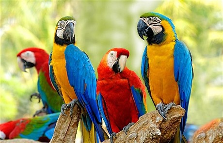

鸚鵡飼養指標
鸚鵡隸屬在鸚形目（Psittaciformes） ，世界約350多個種類，每種鸚鵡的個性都不同，甚至公母個性也有點差異。養鸚鵡並不一定要直接飼養成鳥或是從幼鳥開始養起比較理想，情況因人而異，筆者目前養了十多隻鸚鵡中，有些領養來的時候就是成鳥，有些則是幼鳥開始照顧起。無論如何，要挑選一隻適合自己的鸚鵡，除了要投眼緣、做足功課外，適合自己性格也很重要，這裡建議大家可以從以下幾個指標先觀察起：
眼睛
眼睛有神，不要一直閉著眼睛，並且沒有過多的分泌物。
精神
健康的鸚鵡精神狀況良好，幼鳥的個性就跟小朋友一樣會很活潑，可以嘗試用你的手指當成目標物，看他是否為好奇注視甚至想要追。
羽毛
羽毛完整度與光澤度
盡量選擇顏色有光澤的個體，髒髒的羽毛或是有啄羽毛的個體要格外注意。也順便檢查排泄孔周遭羽毛狀況，是否有拉肚子的現象。
爪子
爪子一直是觀察健康的重要指標，健康鸚鵡的腳有力，足夠抓握樹枝或是站架，也沒有軟腳的情況；爪子上面的小齒結構也會完整，但若是先天腳趾有殘缺或是後天物理性的受傷，其實很多個體是不影響健康的。
叫聲
因為鸚鵡常常利用鳴叫互相溝通，所以可以利用牠們的叫聲來判別是否健康，健康的鸚鵡叫聲會十分響亮乾淨，反之則低沉甚至不愛鳴叫；也可以順便觀察嘴部正常是完整閉合的，沒有明顯張嘴喘氣的現象。
糞便
健康的鸚鵡糞便會分成三個部分，固體糞便、白色尿酸跟透明液體，若糞便為水狀不成形，可能為腹瀉狀況，通常吃種子的鸚鵡為深綠色的糞便；除了觀察顏色跟形狀外，定期做寄生蟲的糞便篩檢，也是很重要的一環。
人工繁殖個體
盡量挑選人工繁殖的個體，一方面也比較穩定外，常常繁殖場也有基本的飼養跟檢疫管理，會比較有保障。
單隻飼養
因為鸚鵡是需要陪伴的寵物，若是新手或是還沒有太多飼養經驗，建議從單隻飼養，避免出現鸚鵡爭寵、打架或是自己忙不過來的問題產生。